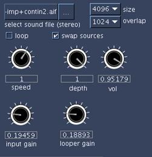

Introduction
This article aims to investigate the potential of Csound and Steven Yi's graphical frontend Blue as a powerful processing device for electroacoustic sound design, largely drawing upon my own personal approach to using Blue, Richard Dobson and Victor Lazzarini's PVS opcodes and certain instruments developed during the composition of my latest acousmatic piece (a work still in progress). I will also raise particular questions regarding the conventional attitude towards Csound as a note-based compositional tool and its malleability on the other hand, for sculpting complex sonic elements in the context of more spectromorphologically orientated acousmatic music (see Smalley: 1997, p. 107).
I. Initial Thoughts: Why Csound?
As an electroacoustic composer my interest lies in exploring the complex domain of sonic space as articulated by spectral arrangements and behaviours. It is therefore no surprise that a large portion of my composing time is spent processing and manipulating recorded sounds within the frequency-domain; frequency-domain processing allows direct manipulation of a sound's spectrum and is conceptually allied with my attitude towards sound-design.
Fortunately the Csound language possesses an extensive set of opcodes for spectral manipulation, and the list is still growing with the latest additions of Victor Lazzarini's PVS opcodes to Csound 51 . But why use Csound at all when there are so many graphically orientated and/or dedicated real-time audio-processing tools and plug-ins available to composers like myself who work with recorded samples and DAW interfaces to carry out most of the mixing and editing tasks? Note that the above issue can be broken down into two parts:
- The lack of GUI in Csound and the convention of coding.
- The fact that Csound’s development is not, from a historical point of view, solely focused on real-time signal processing (compared with programmes such as SuperCollider or Max/MSP where everything by default functions in real-time).2
I have come to appreciate that the code-based nature of Csound makes designing instruments extremely flexible, modular and efficient. Indeed, the prospect of relatively easily coding your own sound-processing instruments - where one has far more control over every aspect and parameter than in any ready-made plug-ins without having to become a programming or DSP guru - makes the initially steep learning curve of Csound worthwhile enduring.
Whilst the code-based nature of Csound is looked upon as a benefit, the lack of GUI can become a problem for composers who are accustomed to the neat time-line of commercial sequencers and automated plug-ins. Without going into too much detail it suffices to say that the emergence of Steven Yi's graphical front-end Blue, beautifully solves this problem by managing to bridge the conceptual gap between conventional sequencers and a highly capable coding language such as Csound. Blue does not attempt to adapt Csound for a specific compositional method but rather it creates a framework that greatly simplifies the control and arrangements of both orchestra and score parts. For some (myself included) this makes the design of complex instruments and processes far more coherent and conceptually approachable than it is in a purely text-based environment.
As for the second issue, the non-real-time approach is in my view one of the joys of Csound: not only it offers the possibility of achieving computationally highly expensive processes (e.g. FFT or complex granular synthesis), it also provides greater control over parameters compared with the improvisatory nature of working with many real-time software packages.
II. Orchestra-Based Processing and Control
In this section I shall present a survey of some of my instruments created in Blue and utilised for processing recorded samples for my recent piece (currently one of two movements is completed). The piece itself is concerned with the creation and morphology of spectral-space as the foundation upon which the impression of spatial totality is created in acousmatic music.
For most parts I made use of the PVS opcodes to design simple spectral plug-ins that were chained together inside Blue's mixer to create more complex processes (note that all mixing and detailed editing was carried out elsewhere). The recorded samples were almost exclusively taken from metallic sources (e.g. rubbed plates, bell-strikes, etc…). Sustained inharmonic resonances are the core building blocks of the piece whereas the noisier metallic attacks are employed mostly to punctuate major structural landmarks or to create listening expectations as to the formal progression of the piece. Materials in the piece oscillate between the two extremes of pitched (notes) and noise-based spectra, inharmonic resonances being the mediating ground.
A Basic Sample Player Instrument
This is a simple sound-file player with looping and transposition functions (using the diskin opcode). This instrument also includes a send function (using the blueMixerOut function) to enable the output to be sent to the master channel of Blue's mixer or to user created sub-channels. Instances of the player instrument can be placed on the Blue time-line while the transposition parameter and the channel's volume are graphically automated.
asig1, asig2 diskin "<filein>", <speed>, 0, <loop> blueMixerOut "<route>", asig1, asig2 ; Blue mixer router
Example 1. A simple sample playback instrument
Working with Spectral Plug-ins in Blue
I use these plug-ins much in the same way as one would use VST plug-ins in a sequencer, with the difference that in Blue one has far more control over the design of the plug-ins and the manner in which the parameters are controlled. For a full explanation of how the plug-ins function, the reader can refer to manual entries of the respective PVS opcodes used. Before continuing further the reader is also urged to familiarise himself/herself with Blue, particularly the notion of plug-ins and automation editing (not to be confused with the concept of real-time sequencer plug-ins).
Spectral Freezing: A Drone-Making Machine
The title is self-explanatory; this plug-in allows the user to quickly experiment with freezing the spectrum of an input sound using Blue's automation capabilities. Example 2 shows the code for the freeze plug-in along with its UI (User Interface) in Blue. Note that the FFT window size and overlap amounts can be graphically changed (i-rate) using a drop down menu. The freeze trigger may be controlled at k-rate by automating the slider available on the UI: when at zero the sound is simply re-synthesised with pvsynth, moving the slider's automation-line to 1 will instantly freeze the spectrum of the input sound. By editing the automation line (example 3) the user can visually determine at which point into reading the sound-file the spectrum of the sound is frozen. Note that the freeze controller works on an on/off (1 or 0) basis therefore there can be no interpolation between total freeze and lack of it. Also note that since this plug-in is used to freeze a sound's spectrum one is not concerned with time resolution and is therefore best to set the FFT window size to a large number (typically 2048 or 4096 samples) for better frequency resolution. As a general rule, an overlap size of at least half the window size is needed for a smoother result.
finl pvsanal ain1, <size>, <overlap>, <size>, 1 ;analysis finr pvsanal ain2, <size>, <overlap>, <size>, 1 fsigoutl pvsfreeze finl, <freez>, <freez> ;freeze fsigoutr pvsfreeze finr, <freez>, <freez> aout1 pvsynth fsigoutl ;synthesis aout2 pvsynth fsigoutr
Example 2. Freeze plug-in and UI

Example 3. Automation edit for the freeze parameter
By employing multiple instances of this plug-in and the player instrument, rich textures can be created through very simple means indeed. One can also manipulate the pitch by automating the transposition function on the player instrument or inserting spectral-shifting and scaling effects on different channel-strips (see example 4 for the code of a simple spectral scaling and shifting plug-in).
;spectral shifting and scaling ftps1 pvsanal ain1, <size>, <overlap>, <size>, 1 ; analyse ftps2 pvsanal ain2, <size>, <overlap>, <size>, 1 fscale1 pvscale ftps1, <scal>, <form> ; transposition fscale2 pvscale ftps2, <scal>, <form> fshift1 pvshift fscale1, <shift>, <lowest>, <form> fshift2 pvshift fscale2, <shift>, <lowest>, <form> aout1 pvsynth fshift1 ; synthesise aout2 pvsynth fshift2
Example 4. Spectral Scaling and shifting
As an example, consider the following setup: Instead of routing the sound-file player's output into the master have already been created on the mixer. This channel can be employed to control the level of the untransformed dry signal. So it is necessary to add a pre-send to this subchannel to route the signal onto subchannel 2 on which the spectral freeze plug-in has been inserted. Furthermore a second send is inserted on subchannel 1, sending the signal to subchannel three. Subchannel 3, in turn, includes a second freeze plug-in to add another layer to the drone's textures. The output drop down menu on the channel strips of subchanneles 2 and 3 are changed from the default master to subchannel 4, so that the collective output of these subchanneles (a sub mix) may be subjected to further processing.
Example 5. Mixer Sub-channel setup
On the time-line window, the volume automations of subchannels 1 and 2 can later be edited in such a way as to only pass the frozen FFT data by fading-in the signal once the freeze controller has been changed to 1. Now we have a basic drone-maker that takes snapshots from the sample player's outputs and freezes them in time. In the example above I have also added a spectral scale-shift effect to subchannels 2 and 3 to have the option of subtly shifting or transposing the two freeze layers independently.
Example 6. Volume control combined with freezing automation
Listening to the resultant sound, it is clear that there is a major inadequacy to spectral freezing: one looses the morphological energy that provides sounds with a sense of presence and spatial realism. Beautifully crafted drones can often be very banal in this sense. There are several ways in which life can be re-injected into sustained spectra. Of course very drastic and refined volume automation is one way of creating morphology from sustained sounds (a technique I often use in complex mixes as a kind of manual additive synthesis) but this does not affect the actual spectrum of the sound and, if used carelessly, may render unrealistic morphologies. I applied three distinct procedures to reanimate static spectra of the sounds made with the freeze plug-in:
- Cross synthesis
- Spectral arpeggiation
- Spectral diffusion within the panoramic field
Cross Synthesis
The PVS opcodes offer four methods of cross-synthesising fsig data: pvscross, pvsmorph, pvsfilter and pvsvoc opcodes. Each one of these opcodes outputs a very different result and for an interesting outcome repeated experimentation is required with different sound sources and settings. My own personal preference is pvsfilter; this opcode filters the spectrum of one sound by means of another sound's spectral evolution, thus retaining the basic characteristics of the first input while imposing the spectral envelope of the second input onto it.
Making a cross-synthesis plug-in in Blue requires the addition of two more inputs to the effect code (for processing two stereo files), however there is a simpler option: the addition of a second sample-player inside the plug-in itself. Example 7 shows the code and interface of my crossfilt plug-in. Again, I have added a k-rate transposing function to the internal sample-player. This is because by transposing the second sound-file prior to routing it into pvsfilter, different parts of the spectrum of the first source are touched or filtered, creating drastically different results. This plug-in's UI also allows the user to swap the sources with the press of a button – i.e. the filtered source is interchangeable with the filtering source. Note that in the example below the volume controls are set very low. This setting is advisable as a starting point, as the output can sometime be drastically loud, depending upon the nature of the inputs.

ireverse = <rev>
ar1, ar2 diskin "<file>", <speed>, 0, <loop>
ftps1 pvsanal ain1*<g2>, <size>, <overlap>, <size>, 1 ;analyse
ftps2 pvsanal ain2*<g2>, <size>, <overlap>, <size>, 1
ftps3 pvsanal ar1*<g1>, <size>, <overlap>, <size>, 1
ftps4 pvsanal ar2*<g1>, <size>, <overlap>, <size>, 1
if (ireverse == 1) kgoto setup1
kgoto setup2
setup1:
fsig1 pvsfilter ftps1, ftps3, <depth>, <vol>
fsig2 pvsfilter ftps2, ftps4, <depth>, <vol>
goto end
setup2:
fsig1 pvsfilter ftps3, ftps1, <depth>, <vol>
fsig2 pvsfilter ftps4, ftps2, <depth>, <vol>
goto end
end:
aout1 pvsynth fsig1 ; synthesise
aout2 pvsynth fsig2
Example 7. Spectral Cross filter plug-in
Spectral Arpeggiation
This plug-in permits the spectrum of the input sound to be arpeggiated by gliding up and down the FFT bins at a user-defined rate, magnifying one bin at a time while weakening the remaining bins on either side with controllable depth (Wishart: 1994). For this, pvsarp opcode is the obvious choice. Here, the arpeggiation function is controlled by the oscili opcode. The oscili arpeggiator defaults to reading a bell curve (GEN 19) or can be changed by means of a drop down menu on the UI to GEN 7, where the user can graphically edit a break-point-function representing the waveform (see example 9). Two oscili arpeggiators have been employed, one for the left channel and one for the right. The user may change the initial phase (i-rate) of the left and right arpeggiators independently. For instance, changing the phase of the right channel arpeggiator by a factor of about 0.2 tends to create interesting stereo movements where the spectral gliding movement is reflected within the stereo panning.
By multiplying the frequency of the arpeggiating oscillators with the output of the jitter opcode, a more naturalistic spectral animation is achieved, eliminating the regularity of the oscillator. If pvsarp's variables (e.g. depth) are set carefully to produce only a slight magnification of the central FFT bin and only a small amount of the resulting sound is mixed with the original signal, this plug-in is capable of producing subtly interesting effects by enhancing the stereo depth of the incoming sources through spectral manipulation.

itable3 ftgen 0, 0, 16384, -19, 1, 1, 260, 1 itabledraw ftgen 0, 0, 16384, -7, <table_shape> ;add random jitter to the arpeggiation oscillators kjit jitter <randamp>, <randmin>, <randmax> kmod1 oscili <moddepth>, <modfreq>*kjit, <tablenum>, <phase1> kmod2 oscili <moddepth>, <modfreq>*kjit, <tablenum>, <phase2> ftps1 pvsanal ain1, <size>, <overlap>, <size>, 1 ; analyse ftps2 pvsanal ain2, <size>, <overlap>, <size>, 1 ;arpeggiate ftar1 pvsarp ftps1, (<bin1>+0.01)+kmod1, <depth>, <vol> ftar2 pvsarp ftps2, (<bin2>+0.01)+kmod2, <depth>, <vol> aout1 pvsynth ftar1 ; synthesise aout2 pvsynth ftar2
Example 8. Spectral arpeggiator
Spectral diffusion
This method animates different parts of the input's spectra within the stereo field by combining two plug-ins. The first plug-in (FFT filter) selects specific regions of a sound's spectrum whilst the second is added to create a kind of panning movement.
Stereo Modulator - a double (stereo) LF amplitude-modulator is used to create spatial movement in stereo field (see example 9). As in the Arpeggiator, the left and right channels are amplitude modulated separately: the user can offset one of the channels' LF modulator's initial phase, as to create the impression that the image moves across the stereo field. Again, a bell curve can be selected as the modulator's waveform, or it can be manually drawn on the line object. Also, analogous with the Arpeggiator, the modulation frequency can be subtly randomised with the aid of the jitter opcodes.
itable3 ftgen 0, 0, 16384, 19, 1, 1, 260, 1 itablecreate ftgen 0, 0, 16384, -7, <table_shape> kjit jitter <randamp>, <randmin>, <randmax> amod1 oscili <moddepth>, <modfreq>*kjit, <tablenum>, <phase1> amod2 oscili <moddepth>, <modfreq>*kjit, <tablenum>, <phase2> aout1 = ain1*amod1 aout2 = ain2*amod2
Example 9. Stereo ring modulation for panning effect
Stereo Spectral Filtering – this plug-in uses the pvsmaska opcode to achieve spectral filtering where the FFT bins of the input signal are multiplied by an index provided in a GEN 7 function table. The user can visually edit the content of the function table (the lowest bin on the left hand side and the highest on the right). The left and right channels read from different function tables, each of which is controlled by separate line-objects on the UI.
itablel ftgen 0, 0, 513, -7, <filter_freqL> ;hand drawn tables itabler ftgen 0, 0, 513, -7, <filter_freqR> if (<swap> == 1) then ;swap left and right filter tables itableL = itablel itableR = itabler else itableL = itabler itableR = itablel endif fsig1 pvsanal ain1, 1024, 256, 1024, 1 ;analyse fsig2 pvsanal ain2, 1024, 256, 1024, 1 ffilt1 pvsmaska fsig1,itableL,1 ;filter ffilt2 pvsmaska fsig2,itableR,1 aout1 pvsynth ffilt1 ;synthesis aout2 pvsynth ffilt2
Example 10. Spectral filter
Setup for Spectral Diffusion
Previously, our Blue session was set up as to send a sub-mix of the spectral freeze to subchannel 4. To achieve the spectral diffusion, a send is inserted on subchannel 4 to route the signal yet once more into subchannel 5 which has already been created on the mixer. Subchannel 4 now requires two plug-ins (placed after the send), a spectral-filter and stereo-modulator. The spectral-filter is configured in such a way that the left and right channels are filtered differently (mirror image is interesting). The modulator is set so that the left and right channels’ phases are both 0.0 (modulation frequency is set low – e.g. under 2 cycles per second). The same plug-ins are also inserted on subchannel 5 by copying and pasting them (so that the settings are kept identical). The only differences between the plug-in configurations on subchannel 4 and 5 is that the tick-box named “swap” in the UI of spectral-filter must be ticked on one subchannel only (in order to reverse the stereo filtering image) and the modulation phases on subchannel 5 is set to 0.5; this will ensure the symmetrical movement of the two differently filtered signals within the stereo field. Frequency randomisation (jitter) is also added to the modulator to eliminate the perfect symmetry between the two modulators, and create better stereo depth.
Through this process a kind of spectral diffusion occurs where different parts of the spectrum of a signal are animated in panoramic space, adding depth and motion to the stereo image. Many variations of this process can be built, mixing multiple layers together (all derived from the same signal) and sending them to different channels for further transformations. For instance, an interesting effect is achieved through the insertion of a spectral blur plug-in (using pvsblur opcode) on the master channel; if used subtly this tends to unify the diffused spectral parts, at the same time keeping the stereo depth intact (although somewhat blurred!).
III. Score-based Control and Scripting
The power of the Csound orchestra for processing sounds is so overwhelming that the prospect of writing score parts may seem daunting or irrelevant for an experienced DAW user. After all, the concept of defining note to note parameters seems somehow contradictory in the context of spectromorphologically charged electroacoustic music, which by definition focuses on sculpting non-conventional morphologies as opposed to conventional note-structures (Smalley: 1997, p. 109).
However, lately I have become aware of the vast potential of score-based processes. This awareness came with the realisation that notes (in Csound language) do not necessarily model the idea of notes in conventional instrumental or midi-based composition in terms of sound morphology. In fact, each Csound note can be viewed as a sound event with as many parameters as the user has defined, furthermore each event may be intrinsically constructed of multiple nested events or layers; this idea is very coherently represented in Blue with the concept of polyobjects (see Blue's manual). In this sense, a note can be anything from a single micro-level grain to a complex multilayered texture.
Conceiving the single-grain-detailed control within the Csound score environment is one thing, but the practicality of controlling the many parameters of each grain is quite another. This is where the significance of scripting becomes apparent. Using a scripting language like Python or Cmask the capacity of the instruments discussed above may be further expanded to create far more complex textures, comprising of hundreds of single events, where each event may dynamically vary according to a simple and often very short script.
Having learnt the very basics of the Python language I started experimenting with a simple instrument and, to my surprise, the sample player instrument could be altered to create strikingly dense textural material. All these materials were later further transformed or edited, in other words treated as complex sound sources rather than whole sections of the piece. Thus the score generating script becomes a complimentary part of the instrument and processing method as opposed to merely a “note generator”. For instance, consider all the possibilities offered by coupling the older PV opcodes (spectral processing and re-synthesis from pvoc analysis files) with Cmask and the UI builder in Blue. One can envisage FFT instruments where each score event represents one window, read from the analysis file: a compositionally granular approach to FFT processing with hands-on control over every bin and window parameter. The inbuilt generators in Cmask can be used to read analysis windows in any order, from random to linear interpolation. This technique could even be used to create similar (but more easily managed) drones as demonstrated with the freeze plug-in.
IV. Final Remarks
In this article I have attempted to highlight aspects of my personal method of working with Csound and Blue. The examples presented were chosen to readily exhibit the direct relationship between my musical ideas affiliated with the spectral attitude towards sound design, and the processing techniques used to realise these concepts with Csound. In addition to demonstrating the practical application of Richard Dobson and Victor Lazzarini's great set of PVS opcodes for spectral transformations, it was my intention to display the ease and intuition with which Csound may be used for the purpose of sound processing, by taking advantage of Blue's graphic user interface. It is clear that the graphic UI of Blue, together with Csound's expansive repertoire of opcodes, produce a powerful environment that suits the empirical approach of many electroacoustic musicians to sonic alchemy. Similarly, it can be observed that developing a score-based approach through scripting has the potential of greatly enhancing the controllability of complex morphologies and, more importantly, offer new and unique processing possibilities to composers.
Examples
http://www.esnips.com/web/peimankhosravisOtherStuff
The piece discussed in this article can be downloaded at the above URL under the name when the mirror (mp3).
blue example projects
Footnotes
- The original fsig framework and the earlier pvs opcodes (pvsanal, pvsfread, pvsinfo, pvsynth, pvsadsyn, pvsmaska, pvscross, pvsftw and pvsftr) were created by Richard Dobson and released in Csound
4.13. Victor Lazzarini has since added numerous pvs opcodes in Csound 5 (particularly those discussed here). John ffitch has also contributed with his pvscent opcodes, although this opcode is not discussed here (for detail see http://www.csounds.com/manual/html/SpectralRealTime.html).
- Note that SuperCollider and Max/MSP both allow non-realtime processing, but the development of these environments revolves around realtime processing, thus largely influencing the user's approach to and interaction with these languages. Csound, on the other hand, is known historically as an offline sound synthesis language, although today it is optimised and often used for real-time processing and synthesis. In particular the PVS opcodes mentioned here are all developed for real-time use, as opposed to the older PV opcodes (reading from pvoc analysis files).
References
KARPEN, Richard (2000). ‘Csound's Phase Vocoder and Extensions', in Richard Boulanger (ed), The Csound Book, London: The MIT press, pp. 543-560.
SMALLEY, Denis (1997). ‘Spectromorphology: Explaining Sound-shapes', in Organised Sound Vol. 2, Part 2 (Cambridge University Press), pp. 107-26.
V. Lazzarini, J. Timoney, and T. Lysagh, ‘STREAMING FREQUENCY-DOMAIN DAFX IN CSOUND 5', in Proc. of the 9th Int. Conference on Digital Audio Effects (DAFx-06), Montreal, Canada, 2006. http://www.dafx.ca/dafx06_proceedings.html
WISHART, Trevor. Audible Design: A Plain and Easy Introduction to Practical Sound Desgin. York: Orpheus the Pantomime, 1994.
YI, Steven. blue. http://www.csounds.com/stevenyi/blue/index.html
Acknowledgements
I would like to thank Steven Yi (Blue) and Victor Lazzarini (PVS opcodes in Csound 5) not only for their software contributions but also for the endless support they have offered me via the Csound and Blue mailing lists.